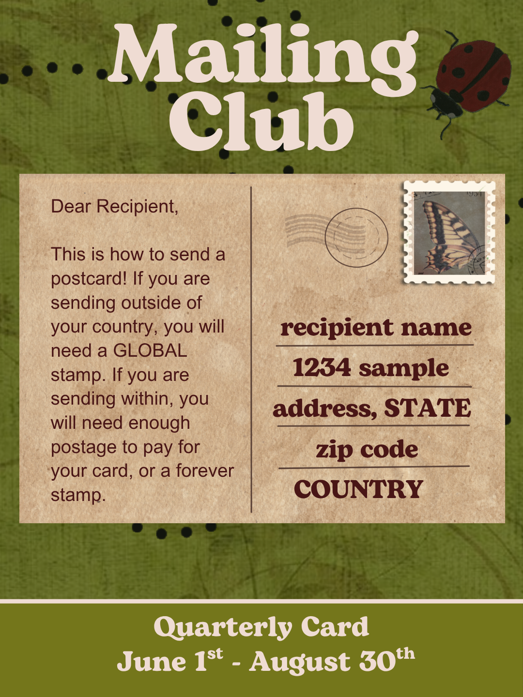

Hello! I'm a TTRPG and fantasy enthusiast who loves making art, writing, reading, and roleplaying. I run a book & pen-pal club for my friends, and love to travel, make new recipes and collect postcards and stickers from all over the world!
Hello! If you are interested in sending or receiving mail from trusted members of this server, please react to the snail mail club in the #rules-and-roles channel.
`Be aware that exchanging addresses is a necessary part of this club!`
Expectations:
> People exchanging mail can send postcards, stickers, letters, art, tea, buttons, jewelry, crafts, games, and more!
Timing:
> I will ping this role quarterly to see if anyone would like to participate in a round of sending and receiving mail.
Sending Mail:
> If you are interested in sending snail mail, post about what you might send and let people reach out to you.
Finding a Pen-Pal:
> If you are interested in having a long term pen-pal to send letters back and forth with in a more involved manner, kindly reach out to the person you would like to send mail with either here or privately. Please coordinate together on sending mail.
Remember, people are putting time, effort, energy and money into this hobby. If you have any questions, or are experiencing issues with participating in this pen-pal club, kindly let me know privately and I will do my best to assist in resolving.

Hello! I wanted to report a bug that I found while browsing PassortDex' books section.
Selecting a title from the Similar Titles section should navigate to that book's page and refresh all page content to display information corresponding to the newly selected title.
The page's title updates from The Nightingale to The Four Winds, but the rest of the page content does not refresh. Information associated with The Nightingale remains displayed despite the title now showing The Four Winds.
This creates a mismatch between the displayed book title and the associated book information, which could cause users to believe they are viewing information about The Four Winds when the page is still displaying content for The Nightingale.
A screenshot is attached showing the updated The Four Winds title alongside the unchanged The Nightingale page information.